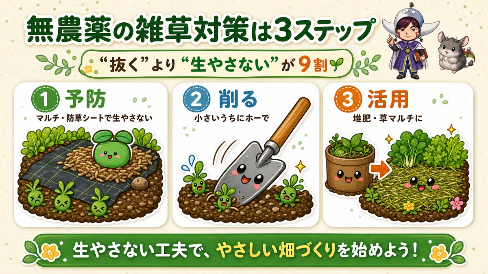
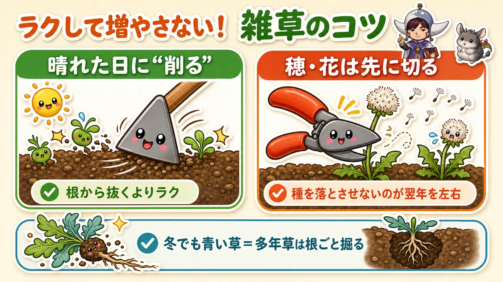
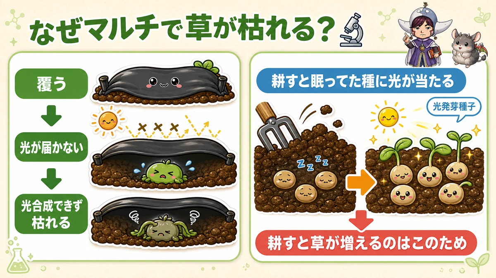

Not letting them grow is nine tenths of it 🌱 Weeds without herbicide

🌱 "I pull them and pull them and it never ends."
🌱 "No herbicide, so what am I supposed to do?"
🌱 "I looked up and the plot was a jungle."
Hello, I'm Eiko. Eight years of growing vegetables organically and without pesticides, and a teaching licence in science.
Honestly, first: you will not get to zero weeds. In a hot year I put my hands up and concede, and so do professional growers. Don't aim for perfect.
What matters is this: "not letting them grow" beats "pulling them", and it's nine tenths of the job.
Why weeds matter at all
It isn't only how it looks.
- They compete with your vegetables for nutrients, water and light
- They house insects — which quietly hurts if you're not spraying
- And an overgrown plot is depressing to look at, so you stop going: the vicious circle
Put the other way round: get the weeds down and the pests drop too, and growing without sprays becomes much easier. Weed control is part of the foundation.
① Prevention is the strongest move

What this diagram says （図解の文字）
- Weed control without sprays, in three steps
- "'Not letting them grow' beats 'pulling them' — nine tenths of it"
- ① Prevent — "mulch film and ground-cover fabric stop them growing"
- ② Hoe — "while they're small"
- ③ Use them — "as compost or as a weed mulch"
The most effective thing is to stop them germinating. No light reaching the soil, no weeds.
- Black mulch film over the bed. It also stops soil splash (so, disease) and reduces drying — three jobs at once
- Ground-cover fabric for paths and larger areas. Laid once, it lasts years
Choosing ground-cover fabric
From my time working in a garden centre: prices vary enormously, and they're sold by expected life — 4, 8 or 10 years. The cheap ones get punched through by the tough perennial grasses. Where you have persistent weeds, the dearer, tougher grade works out cheaper. It passes water perfectly well, so puddling isn't a concern.
② Hoe them small, and never let them seed

What this diagram says （図解の文字）
- Less work, fewer weeds
- "Hoe on a sunny day" — "easier than pulling by the roots"
- "Cut off the flower heads first" — "not letting them seed decides next year"
- "Green through winter = perennial. Dig those out with the root"
Hoe, don't pull
Skimming the surface with a hoe is several times less work than pulling weeds up by the root. Run it between the rows and around the plants.
The trick is to do it on a sunny day — the cut weeds bake in the sun and die where they lie.
Don't let them set seed
This is the biggest present you can give next year's self. A weed that seeds means a flood of them next season.
So when you can't keep up with the weeding, at least go round with shears and cut off anything in flower or seed. That alone makes a real difference.
Tell the persistent ones apart
Anything still green in winter — dandelions and the like — is a perennial. Cutting the top off achieves nothing; it regrows from the root, so dig it out.
Annuals are fine as long as you don't let them seed.
③ What you pull is worth keeping
Don't bin it. Buried with rice bran it becomes compost, and dried and laid around your plants it becomes a weed mulch — which suppresses the next lot of weeds.
If you grow in containers, relax
Containers use bought compost, so weeds barely appear — the occasional seed blows in and germinates, and you pull it. Weeds are a problem for people with ground.
Science bit: why does covering kill them? 🔬

What this diagram says （図解の文字）
- Why does covering kill weeds?
- "Cover it" → "no light gets through" → "it can't photosynthesise and it dies"
- "Dig the ground and light reaches the sleeping seed" — Zzz — light-germinating seed
- "This is why digging produces more weeds"
Why do weeds die under a sheet? Because without light there's no photosynthesis. Plants build their energy from light; cut the light and they can't live.
The more interesting part: many weed seeds germinate only when light reaches them — they're light-germinating seeds.
Which means: dig the ground over, light falls on seed that was dormant, and they all come up at once. "I cultivated and got more weeds" is exactly this.
Conversely, keep the light off and the seed stays asleep. Weed seed can lie dormant in soil for years — which is why lifting a sheet brings them back.
Knowing the mechanism makes the tactics click into place. It's also a good "why?" to talk through with children.
A year I lost
I've made this mistake too. One very hot summer the weeds simply didn't stop, and the plot became a sea of green. I gave up for a while, genuinely.
But regrouping with black mulch and ground-cover fabric put it back together. A lost year is survivable. Keep making moves and the plot comes back.
To sum up
- ✅ "Not letting them grow" beats "pulling them". Prevention is nine tenths
- ✅ Mulch film and ground-cover fabric, pegged and weighted against wind
- ✅ Hoe them small, on a sunny day
- ✅ Never let anything set seed — cut the heads off if nothing else
- ✅ Green in winter = perennial. Dig those out
- ✅ Weeds you pull become compost or mulch
- ✅ Digging exposes dormant seed to light and makes more weeds
You don't need total war with the weeds. Moderate and frequent is enough to keep a plot running 🌱
Thank you for reading!